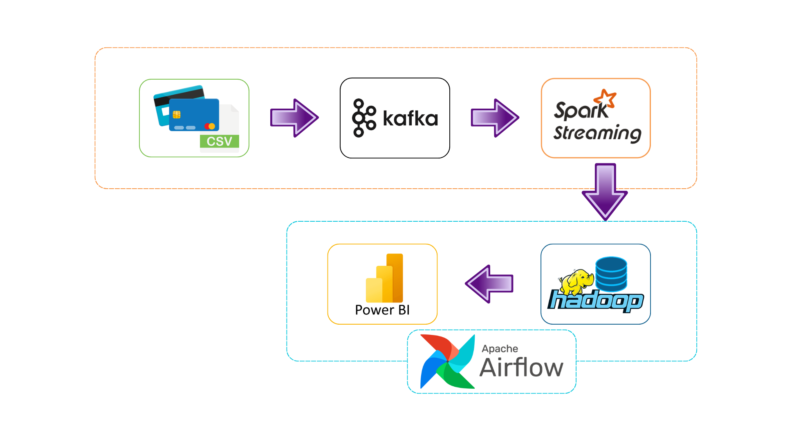
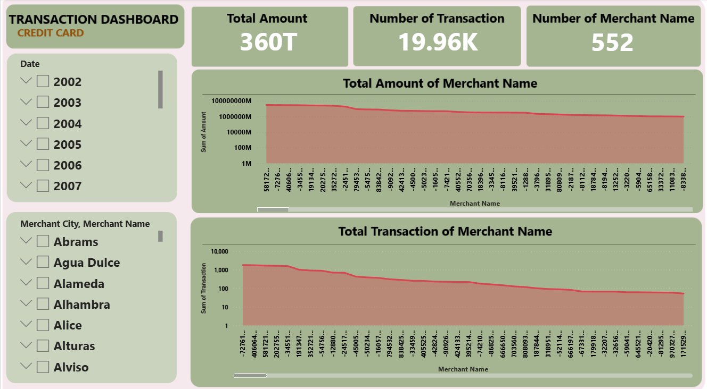

Kafka - Spark Streaming - Airflow - Hadoop - Power BI - Data Pipeline - Realtime Analytics
COURSE PROJECT - Team size: 4


Develop a real-time data processing system to detect abnormal transaction patterns and support fraud monitoring.